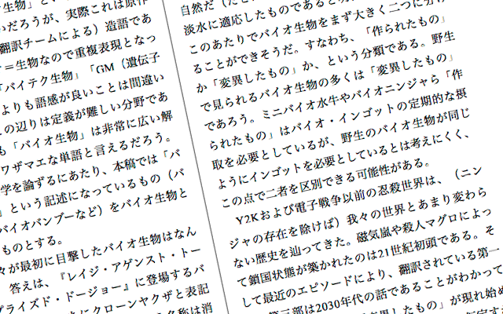

概 要
『ニンジャ学会』はニンジャ学会が不定期に刊行している学会誌です。
◆謝辞◆
今号で894号目の刊行を迎えることができ、これもひとえにニンジャ真実をともに追究する学会員、そして学会の活動・運営を支援してくださる皆様のおかげと学会員一同心より感謝申し上げます。
◆多様性◆
『ニンジャ学会』の特徴のひとつは、その内容の多様性にあります。
学会員それぞれが各々の得意分野を活かし、さまざまなアプローチからニンジャ真実に迫るべく研鑽とカラテを積んだ成果こそが『ニンジャ学会』なのです。
皆様方におかれましてはぜひ本誌をお手に取っていただき、そのパワとゼンとを感じていただければ幸いです。
内容＆執筆者紹介
タイトルをクリックすると内容の一部が表示されます
論文
圧縮率による著者推定法のニンジャスレイヤーへの応用
バイオインゴットの構成要素に関する考察
サキブレの統計および更新時間帯の予測

コラム
- 歯塚傷子 「他者と死者とニンジャ」
- 碌星らせん 「ヤクザ天狗の繁殖行動 〜ネオサイタマ生物学の小窓から〜」
- さぶなっく 「バイオ生物学のススメ」
-
もちよ・ザ・マーダラー 「モータルのためのフーリンカザン
〜来たるニンジャ社会へのアンタイウェポン〜」
他者と死者とニンジャ
ヤクザ天狗の繁殖行動
〜ネオサイタマ生物学の小窓から〜
バイオ生物学のススメ
モータルのためのフーリンカザン
〜来たるニンジャ社会へのアンタイウェポン〜
頒 布 情 報
2016年8月12日（金）
コミックマーケット 90
東エ 04a ニンジャ学会
頒布価格：￥600
◆BOOTHでの電子版頒布も検討中な◆